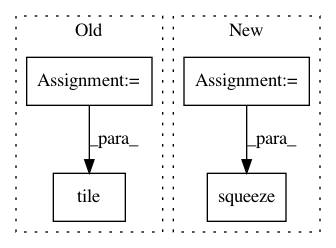

072e5680310c1cefef7e520c16bb20e92da3016d,geomstats/geometry/hypersphere.py,HypersphereMetric,exp,#HypersphereMetric#Any#Any#,342
Before Change
// TODO(nina): Raise error when vector is not tangent
n_base_points, extrinsic_dim = base_point.shape
n_tangent_vecs, _ = tangent_vec.shape
n_exps = gs.cast(gs.maximum(n_base_points, n_tangent_vecs), gs.int32)
hypersphere = Hypersphere(dimension=extrinsic_dim-1)
proj_tangent_vec = hypersphere.projection_to_tangent_space(
tangent_vec, base_point)
norm_tangent_vec = self.embedding_metric.norm(proj_tangent_vec)
n_tiles_vec = gs.cast(gs.divide(n_exps, n_tangent_vecs), gs.int32)
norm_tangent_vec = gs.tile(norm_tangent_vec, [n_tiles_vec, 1])
n_tiles_base_point = gs.cast(
gs.divide(n_exps, n_base_points), gs.int32)
base_point = gs.tile(base_point, [n_tiles_base_point, 1])
mask_0 = gs.isclose(norm_tangent_vec, 0.)
mask_non0 = ~mask_0
After Change
mask_0 = gs.isclose(norm_tangent_vec, 0.)
mask_non0 = ~mask_0
coef_1 = gs.zeros((n_tangent_vecs, 1))
coef_2 = gs.zeros((n_tangent_vecs, 1))
norm2 = norm_tangent_vec[mask_0]**2
norm4 = norm2**2
norm6 = norm2**3
coef_1[mask_0] = 1. - norm2/2. + norm4/24. - norm6/720.
coef_2[mask_0] = 1. - norm2/6. + norm4/120. - norm6/5040.
coef_1[mask_non0] = gs.cos(norm_tangent_vec[mask_non0])
coef_2[mask_non0] = gs.sin(norm_tangent_vec[mask_non0]) / \
norm_tangent_vec[mask_non0]
n_coef_1 = n_tangent_vecs
if n_coef_1 != n_base_points:
if n_coef_1 == 1:
coef_1 = gs.squeeze(coef_1, axis=0)
einsum_str = "i,nj->nj"
elif n_base_points == 1:
base_point = gs.squeeze(base_point, axis=0)
einsum_str = "ni,j->nj"
In pattern: SUPERPATTERN
Frequency: 3
Non-data size: 4
Instances
Project Name: geomstats/geomstats
Commit Name: 072e5680310c1cefef7e520c16bb20e92da3016d
Time: 2020-01-17
Author: ninamio78@gmail.com
File Name: geomstats/geometry/hypersphere.py
Class Name: HypersphereMetric
Method Name: exp
Project Name: danielegrattarola/keras-gat
Commit Name: 9d56361641a64ff73ac630812ecd4964eedbc7aa
Time: 2017-11-09
Author: daniele.grattarola@gmail.com
File Name: gat/graph_attention_layer.py
Class Name: GraphAttention
Method Name: call
Project Name: deepfakes/faceswap
Commit Name: b7b1bd5c6f7892061a9915cd27d19360482d1fd8
Time: 2019-08-03
Author: vrooman.kyle@gmail.com
File Name: lib/model/losses.py
Class Name:
Method Name: gmsd_loss